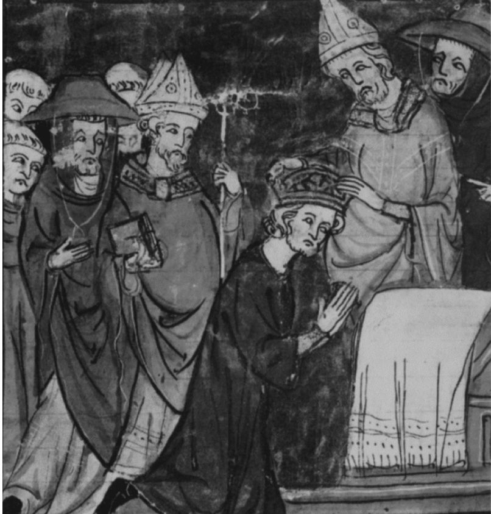

9世纪初至11世纪初，拜占庭帝国臻于极盛。当时帝国的行政区划分完全以省为基础；各省均由一位将军统治。将军既主管行政，又主管军务。希拉克略皇帝已将行政管理军事化，作为外来危险迫近时的一项应急措施。帝国将各省的土地分给农民耕种，作为他们服兵役的报酬。在强有力的皇帝们的统治下，由于农民承受了大部分捐税负担，这种分省统治确保了有效的行政管理，提供了军需储备，填满了国库。
拜占庭的经济也牢固地建立在自由农民村社的基础上，这种村社同大地主的庄园一起发挥着作用。自希腊——罗马古典时期以来，在残存的城市中心，工匠的技能水平很高。阿拉伯作家描写了拜占庭的手工艺品尤其是奢侈品的质量，认为只有中国的工艺品能与之媲美。自欧亚大陆各地区运经君士坦丁堡的大量货物同样很重要，它们是黑海地区的奴隶和盐，印度的调味品、香料和宝石，埃及的纸莎草和粮食，中国的丝绸和瓷器，以及西方的银、熟铁产品、亚麻布、棉花和毛织品。
政治、经济和军事实力的增长，使拜占庭的皇帝们能够发动再征服战争；这些战争虽不像查士丁尼所发动的征服战争那样野心勃勃，却更为实际可行。他们重新收复了克里特岛和塞浦路斯岛，从而制止了阿拉伯海军对爱琴海域的侵袭。帝国的疆土也扩大到叙利亚北部、亚美尼亚和格鲁吉亚。巴尔干半岛北部的保加利亚人一直是帝国的威胁，1014年，巴西尔二世在巴尔干半岛北部取得决定性胜利，从此被称为“屠杀保加利亚人的刽子手”。
在文化上这是一个稳定、和谐的时期。拜占庭人仍称自己为罗马人，但希腊语无论作为书面语还是口语，都是帝国通用的语言。随着被再次征服的克里特岛上的穆斯林和巴尔干北部地区的斯拉夫人的皈依，宗教的和谐一致也得到进一步的促进。865年，保加利亚大公鲍里斯接受了东正教，来换取帝国对他的征服地的承认。以后几年里，拜占庭传教士为保加利亚人提供了字母表，将《圣经》译成了保加利亚语，并制定了斯拉夫人的礼拜仪式。大约与此同时，就像基辅公国的俄罗斯人那样，塞尔维亚人也皈依了东正教。

图87 14世纪的法国金泥写本：公元800年教皇为查理曼加冕。这一事件促使君士坦丁堡于812年授查理曼以“罗马人的皇帝”的称号，从而承认了西方的政治独立。
拜占庭皇帝和东正教主教之间互相支持的密切关系，也使帝国更加稳固。拥有一个恭顺的国教是传统、公认的原则。皇帝不仅自称为“奥特克拉特”，即君主，而且自称是“艾沙波斯特罗”，即相当于传道者的人。10世纪选举君士坦丁堡大主教的仪式书中，明确规定了这种从属关系。教会大主教们按照皇帝的命令聚集在圣索菲亚大教堂，向皇帝提交主教的三位候选人的名单。皇帝可以随意挑选三人中的任何一个，或者三个都拒绝，指定他自己看中的候选人；而这种候选人须得到大主教承认，认为能胜任其职才行。然后，在就职仪式上，“根据上帝和皇帝的旨意”宣布教会的新领导当选为主教。
总之，在这几个世纪中，由于同西方和伊斯兰世界逐步形成了一种适度的和平共处的关系，拜占庭是稳定、强大、富裕、自满和相当倾向于闭关自守的。这些特点使人联想起下章将要提到的明朝统治下的中国。